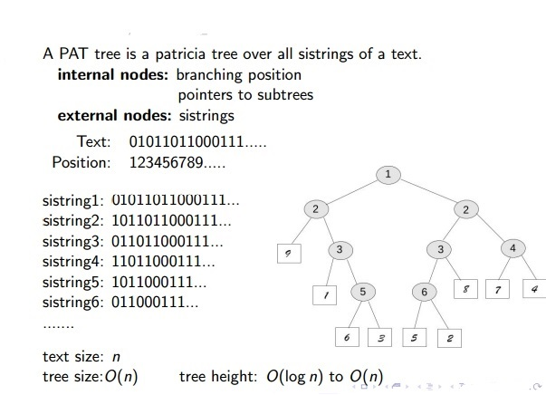

1. Patricia Tree的提出
PATRICIA （Practical Algorithm to Retrieve Information Coded In Alphanumeric）由D.Morrisonrz 于1968年首次提出，Gonnet 在90年代将PATRICIA 应用到全文检索领域，发展成为PAT tree 并获得巨大成功。它也是TRIE树的一种，
2. 题外
由于在课程学习中需要做一个基于Patricia树的简单应用，故尝试去理解Patricia的本质。让我惊讶的是在google 几乎找不到关于Patricia结构和基本算法的略详尽的讲解。只能零碎的收集到相关内容，加上自己的理解，作此篇说明。有关 Patricia 树的基本原理是一致的，但Patricia tree、Patricia Tire、PAT Tree 还是有区别的，弄清这些不同，有助于对Patricia 以及其应用的理解。如果有错误的地方，欢迎指正，或者有相关内容的讲解，欢迎分享。
3. Patricia tree
3.1 Patricia Tree结点结构，
Patricia tree 主要用于检索，那么目的就是能更快的定位到要找的信息。Patricia tree 是将字符串转换为二进制，再通过bit 位来比较的，因此只需要记录两个字符最早开始的不同的位即可，若数据在这一位为‘0’，则将该数据放入左子树，在这一位为‘1’，则将该数据放入右子树。因此这些比较位就构成了路径记录表。patricia tree 为完全二叉树。
例如：
主要存在两种结点结构：
内部节点 ：用来记录关键词的路径，主要有三项：
- 左指针： 指向该结点的左子树；
- 右指针： 指向该结点的右子树；
- 比较位： 记录从根结点到达该结点所有串最后一个不相同bit位的位置，用来记录关键词的路径，当比较位为0时，位串转向左子树，当比较位为1时，转向右子树。
外部节点 ：作为叶子结点，存储关键词的具体信息。
3.2 Trie 和Patricia tree
- Trie : 来源与单词
retrieval, 每个从根节点出发的路路径都代表一个字符串 - Patricia tree : 不存在只有一个孩子的结点，每个结点都起到分类的作用，如果字符在这一位相同，不能起到区分的作用，那就没有存在的必要，需要合并。
例如 ： 给定字符串 100，010，110
3.3 Patricia Tree 的插入
首先进行一次查询，找到待插入数据与树中所有数据的的第一个不同位作为比较位，形成相应的外部结点，在进行一次查询，找到待插入的内部结点位置，将其分裂为两个内部结点，同时插入到Patricia 树中。
3.4 Patricia Tree 的删除
首先根据待删除数据进行一次查询，找到待删除数据所在的叶子结点，将此叶子结点以及叶子结点的父结点删除，然后将父结点的另一个孩子直接连接在父结点的父结点（即祖父结点）上。当树中，只存在一个根结点或者两个叶子结点时，只删除待删除数据所在的叶子结点。
4. Patricia Trie
Starting with the standard trie data structure, we avoid one-way branching via a simple device: we put into each node the index of the bit to be tested to decide which path to take out of that node.
Thus, we jump directly to the bit where a significant decision is to be made, bypassing the bit comparisons at nodes where all the keys in the subtree have the same bit value.
Moreover, we avoid external nodes via another simple device: we store data in internal nodes and replace links to external nodes with links that point back upwards to the correct internal node in the trie.
These two changes allow us to represent tries with binary trees comprising nodes with a key and two links (and an additional field for the index), which we call patricia tries. With patricia tries, we store keys in nodes as with tries, and we traverse the tree according to the bits of the search key, but we do not use the keys in the nodes on the way down the tree to control the search; we merely store them there for possible later reference, when the bottom of the tree is reached.
另外一种 Patricia 树的结点结构，我们不设外部结点，直接将数据存储在内部结点中，将指向外部结点的指针指回到树中正确的结点。这种树我们叫做 Patricia Trie; 当搜索时，我们不需要存储在结点中数据，只是根据搜索数据在比较位上是‘0’或‘1’来控制搜索路径。
如下图：
这是加州大学2012年的一份编程作业，原任务要求在这儿.里面有较为详细的插入算法和删除算法讲解。
5. PAT Tree
A PAT tree is a patrica tree over all sistring of a text .
PAT tree 是用于全文搜索领域的，它将整个文本的 sistring 都插入到树中：
如下面这个例子：
- 注 : 这里外部节点存储的是sistring 在原文本的起始下标；

5.1 PAT tree 应用
- 前缀搜索（prefix searching）
- 邻近搜索（proximity searching）
- 范围搜索（range searching）
- （longest repetiton searching）
- （most frequent searching）
- （regular expression searching）
- （the longest palindrome searching）
这里有篇关于运用PAT tree解决子串匹配的详细讲解 ;
6. Reference
- http://www.ecst.csuchico.edu/~mjstapleton/courses/Fall2007CSCI311/Patricia_tree.htm
https://cw.fel.cvut.cz/wiki/_media/courses/a4m33pal/paska13trie.pdf
http://kontext.fraunhofer.de/haenelt/kurs/Referate/Koerkel-Qu-PATTrees.pdf
- 基于 PATRICIA tree 的汉语 自动分词词典机制.